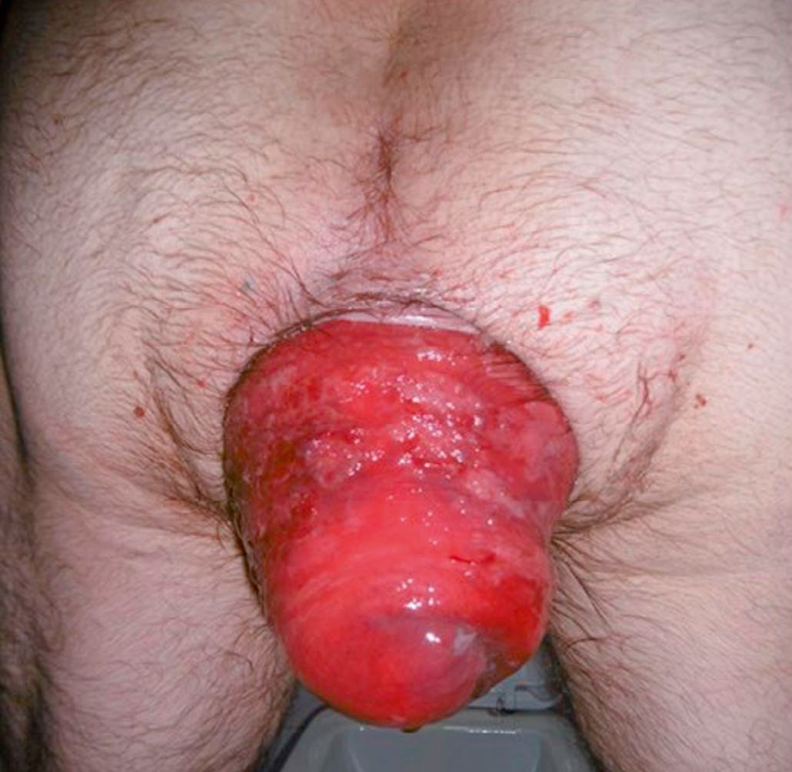
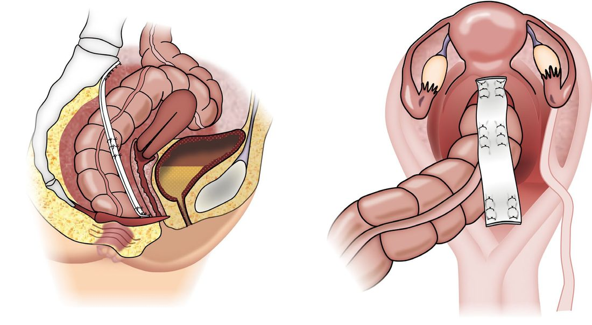
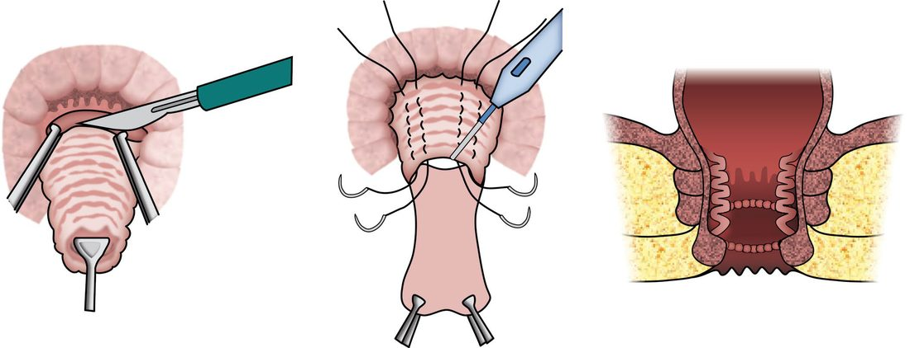
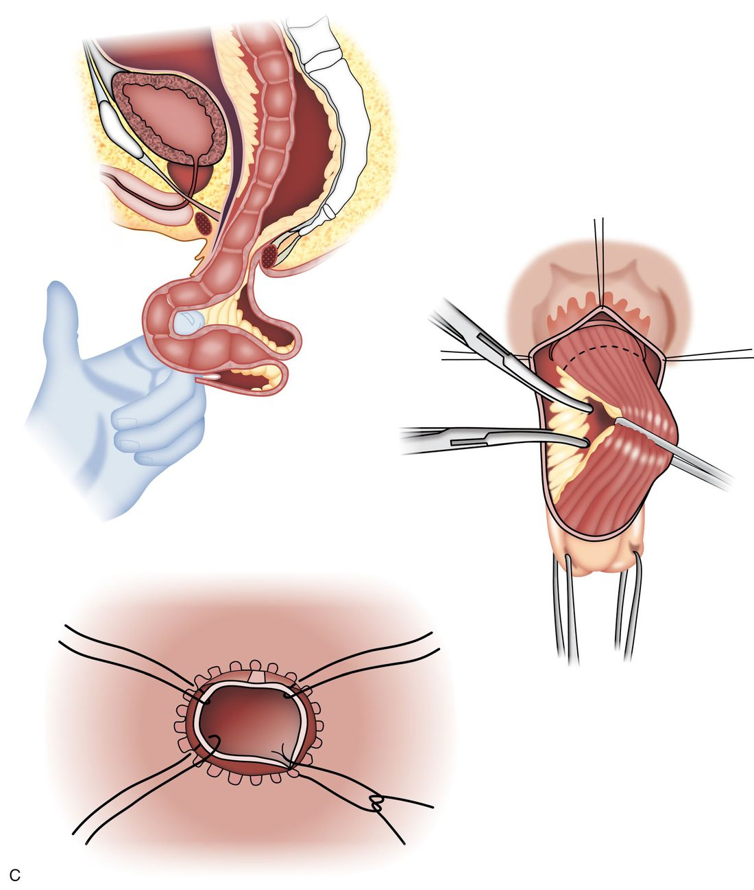

Rectal Prolapse
Summary
- Rectal prolapse is the protrusion of rectal tissue through the anus, ranging from partial-thickness mucosal prolapse to full-thickness protrusion of the entire rectal wall (procidentia), and internal prolapse (intussusception) confined within the rectum [1].
- It is commonest in elderly, multiparous women with chronic straining and pelvic floor weakness [1][2].
- Surgery is almost always required for full-thickness prolapse, via a perineal or abdominal approach depending on patient fitness [1].
- NICE has appraised laparoscopic ventral mesh rectopexy for internal rectal prolapse and placed it in the restrictive tier: "this procedure should only be used with special arrangements for clinical governance, consent and audit or research" [3].
- The guidance goes further than most, specifying who selects the patient, who operates, and where the data go, a pelvic floor multidisciplinary team, a trained and mentored laparoscopic pelvic floor surgeon, and a registry such as the British Pelvic Floor Society database [3].
- Note the scope: HTG475 covers internal prolapse, not external full-thickness prolapse [3].
Definition
Rectal prolapse may be mucosal (the mucosa and submucosa protrude outside the anus, a double layer of mucosa on palpation) or full-thickness/complete (procidentia, all layers of the rectal wall protrude, a double thickness of the entire rectal wall on palpation); full-thickness prolapse may begin as an internal intussusception that is contained within the rectum before protruding externally [1].
Pathophysiology
- Mucosa involved in prolapse undergoes chronic changes: glandular branching, occasional gland misplacement, thickening of the muscularis mucosae, excess submucosal collagen deposition, mucosal inflammation and focal ulceration, which may produce the appearance of a "solitary rectal ulcer" [1].
- Full-thickness prolapse typically begins as an intussusception of the rectum starting anteriorly, where supporting tissues are weakest (especially in women), descending to protrude through the anus.
- It is more than 4 cm and commonly 10–15 cm long, with the anal sphincter characteristically patulous and gaping on straining.
- Prolapse over 5 cm contains a peritoneal pouch anteriorly, which in large prolapses may contain small bowel or bladder [1].
- Internal rectal prolapse (intussusception) descends toward the anal canal during defecation, acting as a functional blockage and causing obstructed defecation, often with coexisting rectocele and enterocele [1].
Clinical features
Mucosal prolapse: discharge of mucus, small-volume faecal staining, pruritus ani, and occasionally small-volume bright-red bleeding [2]. In adults it is often associated with third-degree haemorrhoids ("mucohaemorrhoidal prolapse") [1].
Internal (full-thickness) prolapse/obstructed defecation: a sensation of rectal fullness or mass, incomplete defecation, dissatisfaction after defecation and repeated attempts to defecate [1][2].
- External full-thickness prolapse: an external prolapsing mass after defecation, usually requiring manual reduction, with mucus and faecal soiling and occasional bright-red bleeding (larger volume if the mucosa is ulcerated) [2].
- Faecal incontinence is present in approximately 50% of adults with full-thickness prolapse; complications include ulceration, bleeding and, rarely, incarceration with ischaemia and necrosis [1].
- Women are affected six times more often than men; it is uncommon in children (usually self-limiting, associated with malnutrition, cystic fibrosis, neurological disorder, Hirschsprung's disease or maldevelopment of the pelvis) [1].
Full-thickness prolapse is distinguished from prolapsing haemorrhoids at the bedside by the direction of the folds: full-thickness rectal prolapse shows concentric folds of rectal mucosa, whereas prolapsing internal haemorrhoids and mucosal-only prolapse show radial invaginations [4]. Peak incidence is in the seventh decade, and symptoms may include a feeling of a bulge, mucus drainage, faecal incontinence, constipation, tenesmus, rectal and pelvic pressure and pain, and rectal bleeding [4].
Concomitant anterior compartment prolapse is common and easily missed: 20% to 35% of patients complain of urinary symptoms and 15% to 30% have vaginal vault or uterine prolapse [4].

Etiology
- Predisposing factors include post-menopausal status, multiple vaginal deliveries, chronic straining and disorders of defecation causing pelvic floor/sphincter weakness, and slow-transit constipation; it occasionally occurs in children with constipation [2].
- In old age both mucosal and full-thickness prolapse relate to weakness of the pelvic floor and anal sphincters; localised partial prolapse may follow fistula-in-ano surgery with extensive muscle division [1].
- The recognised anatomical risk factors are laxity of rectal attachments, a deep cul-de-sac, lack of fixation of the rectum to the sacrum, and a large redundant sigmoid colon; patients with connective tissue disorders such as Marfan or Ehlers-Danlos syndrome may present at a younger age and are at higher risk of recurrence [4].
Diagnosis
Rigid sigmoidoscopy may show mucosal inflammation, particularly anteriorly; prolapse can often be demonstrated on straining in clinic [1][2]. Defecating (or MRI) proctography confirms internal prolapse if suspected and surgery is contemplated, and may demonstrate associated rectocele or enterocele; colonic transit studies are used when slow-transit constipation is suspected and resection is being considered [1][2].
- Three practical points on the assessment. If prolapse is evident on physical examination, no additional confirmatory testing is required [4].
- If prolapse is suspected but not seen, the patient can be asked to reproduce it in clinic by straining on a commode, with or without an enema or a rectal balloon; rectal examination frequently reveals a patulous anus with decreased sphincter tone [4].
- And rarely a rectal mass forms the lead point of the prolapse, so colonoscopy should be performed before surgery [4].
- Fluoroscopic or MRI defecography should be considered where symptoms suggest anterior compartment disorders, since it can demonstrate cystocele, vaginal vault prolapse and enterocele, and such patients may benefit from urodynamics and urogynaecological assessment so that both compartments can be addressed at one operation [4]. Solitary rectal ulcer syndrome (SRUS), an associated manifestation of obstructed defecation, presents classically as an ulcer on the anterior rectal wall 6–8 cm from the anal verge and can be mistaken for carcinoma or inflammatory bowel disease; histology confirms the diagnosis [1].
Scoring and Severity
No formal severity-grading or scoring system for rectal prolapse is described in the source texts; disease is characterised descriptively as mucosal versus full-thickness, and internal versus external [1].
In practice the variable that drives the operative decision is surgical fitness rather than prolapse grade: for patients with acceptable surgical risk (able to tolerate general anaesthesia and pneumoperitoneum) transabdominal rectal fixation is preferred because of the lower recurrence rates, under 10% at 10 years compared with 16% to 30% after perineal repair [4].
| Approach | Operation | Recurrence |
|---|---|---|
| Abdominal | Posterior suture rectopexy; ventral mesh rectopexy | Under 10% at 10 years |
| Perineal | Perineal proctosigmoidectomy (Altemeier); Delorme | 16% to 30% |
Table reformats the recurrence comparison by approach [4].
Treatment and Management
- Infants and young children: digital repositioning taught to parents, addressing underlying causes; if this fails after a 6-week trial, submucosal injection of 5% phenol in almond oil or rubber band ligation under general anaesthetic [1]. Adults, mucosal prolapse: submucosal phenol injection or rubber band application; excision of prolapsed mucosa if unilateral, or endoluminal stapling/internal Delorme's procedure if circumferential [1].
- General measures for all patients include avoidance of straining, biofeedback for defecatory retraining, and stool softeners/bulking agents rather than stimulant laxatives [2].
- Internal rectal prolapse is treated only if proctography-confirmed findings correlate with obstructed-defecation symptoms [1].
Surgeries
Surgery is required for full-thickness prolapse; choice depends on patient age, fitness and prolapse extent [1][2].
- Abdominal rectopexy (open or laparoscopic; posterior suture rectopexy or ventral mesh rectopexy): mobilises the rectum and fixes it to the presacral fascia; offers the lowest recurrence rate (<10%) and is the durable option of choice in fit patients, but carries a risk of pelvic autonomic nerve injury (sexual/bladder dysfunction), which favours a perineal approach in young men; may be combined with sigmoid resection if marked constipation is present on transit studies [1][2][6].

- Delorme's procedure (perineal): circumferential mucosal stripping over the length of the prolapse with plication of the underlying muscle tube, excision of excess mucosa and mucosal anastomosis; preferred in the frail/elderly with a short-segment prolapse, but recurrence rates are high (around 30% at 5 years) [1].

- Altemeier's procedure (perineal rectosigmoidectomy): full-thickness perineal resection of the prolapsing rectum (and any associated sigmoid prolapse) with a hand-sewn or stapled coloanal anastomosis; the procedure of choice for an incarcerated/strangulated prolapse, and a good alternative after Delorme's recurrence, but often complicated by faecal soiling from loss of the rectal reservoir; recurrence rates range from 0–20% [1][7].

- Thiersch's operation (perineal encirclement with wire/tape): largely obsolete due to perineal sepsis, stenosis and obstructed defecation, occasionally used to augment perineal repair in severe pelvic floor weakness [1].
- Comparative data confirm abdominal rectopexy has the lowest recurrence rate of the standard operations, while perineal rectosigmoidectomy avoids an abdominal operation at the cost of higher recurrence [6].
The incarcerated prolapse
Incarceration typically results from obstruction of venous return from the prolapsed rectum, producing a bulky oedematous rectum that cannot be reduced; mucosal ischaemia and ulceration may progress to full-thickness necrosis [4]. Initial conservative measures aim to reduce the oedema, liberal application of sugar as an osmotic agent, plus relaxation, sedation, perianal nerve block or general anaesthesia to permit manual reduction. If the prolapse cannot be reduced, or if there is rectal necrosis that should not be reduced, the patient must go to theatre without delay for a perineal rectosigmoidectomy (Altemeier procedure) [4].
Ventral mesh rectopexy: what the operation involves
Anterior mobilisation is carried out in the rectovaginal septum down to the pelvic floor, between the extraperitoneal rectum and the vagina. The prolapsed rectum is reduced into the abdomen, either permanent or biologic mesh is sutured to the anterior surface of the rectum, and the mesh is suspended to the sacrum, thereby elevating the pelvic floor [4].
- Laparoscopic ventral mesh rectopexy for internal rectal prolapse. "Current evidence on the safety of laparoscopic ventral mesh rectopexy for internal rectal prolapse shows there are well-recognised, serious but infrequent complications
- The evidence on efficacy and safety is limited in quality
- Therefore, this procedure should only be used with special arrangements for clinical governance, consent and audit or research" [3].
- Published 20 June 2018, migrated from interventional procedures guidance IPG618 [3].
The requirements are unusually specific, and each is a separate recommendation [3]:
| Requirement | Detail |
|---|---|
| Governance | Inform the clinical governance leads in the NHS trust |
| Consent | Ensure patients understand the uncertainty about efficacy and safety and that there are different types of mesh available which may have different efficacies and complications; provide clear written information |
| Patient selection | By a pelvic floor multidisciplinary team, typically a surgeon, urogynaecologist, radiologist, nurse specialist, physiotherapist, pelvic floor physiologist and, where appropriate, a gastroenterologist |
| Operator | Only surgeons trained and experienced in laparoscopic pelvic floor surgery who have done their initial procedures with an experienced mentor |
| Registry | Enter details of all patients onto an appropriate registry, for example the British Pelvic Floor Society database; the results should be published |
| Data collection | Patient selection, patient-reported outcomes, mesh-related complications, type of mesh, attachment method and long-term follow-up |
| Device safety | All adverse events involving the mesh must be reported to the MHRA |
Table reformats the special arrangements required for laparoscopic ventral mesh rectopexy [3].
- Read the scope carefully.
- HTG475 is about internal rectal prolapse.
- The textbooks present ventral mesh rectopexy as a mainstream option for external full-thickness prolapse with the lowest recurrence of any technique; NICE's restriction applies to the internal-prolapse indication, where the evidence base is weaker and the population overlaps with obstructed defecation and multi-compartment pelvic floor disorder [3].
Complications
Ulceration and bleeding, faecal incontinence (present in ~50% of adults at presentation), and rarely incarceration with ischaemia/necrosis are recognised complications of untreated full-thickness prolapse [1]. Postoperative recurrence rates vary substantially by technique (see Surgeries, above).
Prognosis
Recurrence risk is procedure-dependent: lowest after abdominal rectopexy (<10%), intermediate after Altemeier's procedure (0–20%), and highest after Delorme's procedure (~30% at 5 years) [1]. Continence often improves after successful repair but poor function (soiling) can persist, particularly after perineal resection with loss of the rectal reservoir [1].
References
- Bailey & Love's Short Practice of Surgery, 28th ed., Ch. 79, Summary box 79.5
- Oxford Handbook of Clinical Surgery, 5th ed., Ch. 12 Colorectal surgery
- NICE HealthTech Guidance HTG475: Laparoscopic ventral mesh rectopexy for internal rectal prolapse (2018, migrated from IPG618), 1.1; 1.2; 1.2 to 1.7; 1.3; 1.4; 1.5; 1.6; 1.7; Overview www.nice.org.uk
- Sabiston Textbook of Surgery, 22nd ed., Ch. 97 Benign Anorectal Disorders
- Sabiston Textbook of Surgery, 22nd ed., Ch. 95
- Schwartz's Principles of Surgery: ABSITE and Board Review, Ch. 29
- The ABSITE Review, 2022, Rectal Prolapse